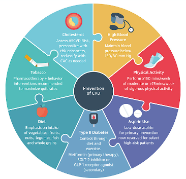

Prevention and management
Some of the risk factor for developing heart disease may include, age, family history, smoking, unhealthy diet, lack of physical activity, alcohol consumption, hypertension, diabetes and obesity.
Many forms of heart disease can be prevented or treated with healthy lifestyle choices.
To prevent the consequences of cardiovascular diseases, your provider may recommand adopting lifelong heart-healthy lifestyle changes such as the followings:

- choose heart-healthy foods
- be physically active
- quit smoking
- get enough good-quality sleep
- aim for a healthy weight
- get your blood pressure and cholesterol checked
- control your blood sugar and
- Regular taking of treatment.